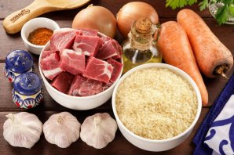
Подготовьте все ингредиенты по списку. Самый вкусный плов получается из баранины, телятины или говядины. В рецепте использовалась мякоть молодой говядины. Мясо промойте, обсушите и нарежьте небольшими кусочками.
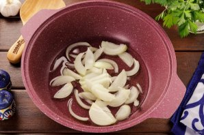
Налейте в казан растительное масло без запаха, дождитесь момента, когда оно хорошо прогреется. Отправьте одну луковицу в масло обжариваться. Нарезка произвольная.
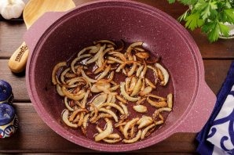
Когда лук станет золотистого цвета, удалите его из казана шумовкой.
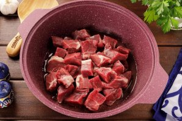
Отправьте в казан мясо и обжарьте его до появления золотистого оттенка.
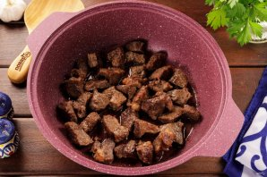
Периодически перемешивайте кусочки, чтоб они не подгорели. Огонь должен быть максимальный.
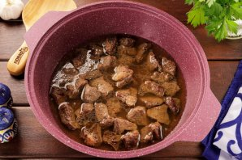
Налейте в казан немного воды, чтоб потушить мясо. Слегка посолите мясо, накройте казан крышкой и томите на среднем огне практически до готовности говядины. Время зависит от того на сколько молодое животное было и какую его часть вы используете.
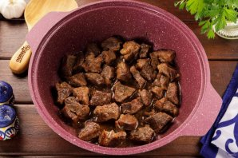
У меня мясо было готово через 45 минут, но иногда требуется времени чуть больше (час-полтора). Если мясо уже готово, а жидкости в казане осталось много, то уберите крышку и выпарите лишнюю жидкость на максимальном огне.
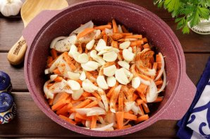
Оставшийся лук нарежьте некрупно. Морковку нарубите брусочками, а одну очищенную головку чеснока разберите на зубчики и нарежьте их на 2-4 части. Отправьте овощи в казан. Так же добавьте специи по вкусу (у меня смесь для плова).
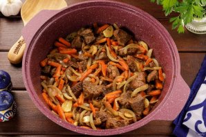
Хорошо всё перемешайте и готовьте около 10-15 минут (практически до готовности моркови). В процессе мясо с овощами досолите по вкусу, если необходимо.
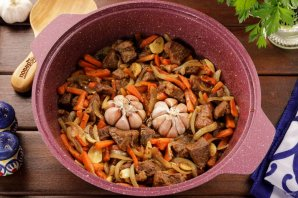
Оставшиеся головки чеснока очистите от верхней шелухи, промойте и выложите в центр.
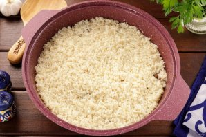
Рис промойте несколько раз до прозрачной воды. Отправьте крупу в казан, распределите ровным слоем.
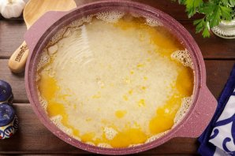
Залейте будущий плов водой так, чтоб жидкость покрывала рис на два пальца.
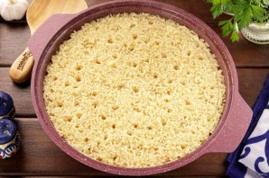
Накройте крышкой и на максимальном огне готовьте почти до полного выпаривания жидкости.
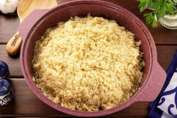
Затем соберите рис к центру.
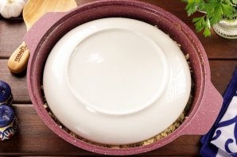
Накройте рис тарелкой, а казан крышкой и готовьте на минимальном огне ещё 10 минут.
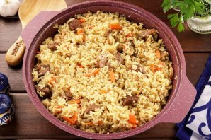
Снимите казан с плиты, укутайте полотенцем и дайте постоять ещё 20 минут. Рассыпчатый плов с говядиной готов. Аккуратно перемешайте и подавайте к столу.
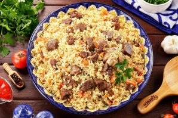
Приятного аппетита!